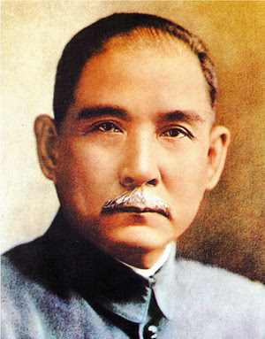

Calculate the total width

余致力國民革命，凡四十年，其目的在求中國之自由平等。積四十年之經驗，深知欲達到此目的，必須喚起民眾及聯合世界上以平等待我之民族，共同奮鬥。 現在革命尚未成功，凡我同志，務須依照余所著《建國方略》、《建國大綱》、《三民主義》及《第一次全國代表大會宣言》，繼續努力，以求貫徹。最近主張開國民會議及廢除不平等條約，尤須於最短期間，促其實現。是所至囑！